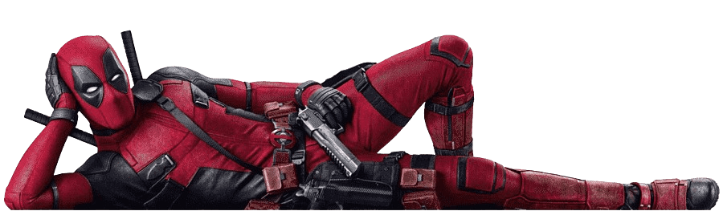

Introducción
Deadpool es uno de los personajes más icónicos y únicos del universo de Marvel Comics. Creado por el escritor Fabian Nicieza y el artista Rob Liefeld, hizo su primera aparición en el cómic "New Mutants" #98 en 1991. Aunque originalmente fue presentado como un villano, rápidamente evolucionó para convertirse en un antihéroe. Su verdadero nombre es Wade Wilson, un mercenario con un oscuro sentido del humor y una tendencia a romper la cuarta pared, es decir, a interactuar directamente con los lectores o espectadores, un rasgo que lo distingue de otros personajes de cómics.
El origen de Deadpool está marcado por una historia de dolor y experimentación. Wade Wilson fue sometido a un tratamiento experimental en un programa similar al que creó a Wolverine, buscando una cura para su cáncer terminal. Este proceso le otorgó un factor de curación acelerado, similar al de Wolverine, que lo hace prácticamente inmortal. Sin embargo, el tratamiento dejó su cuerpo horriblemente desfigurado y lo empujó a la locura, alimentando su carácter caótico, irreverente y propenso a la violencia, mientras que su mente sufre de una mezcla de lucidez y delirio.
Deadpool se ha convertido en un fenómeno de la cultura pop, no solo por su éxito en los cómics, sino también por sus adaptaciones cinematográficas. Hasta la fecha, ha protagonizado tres películas. La primera, "Deadpool" (2016), fue un éxito inesperado que revitalizó el género de los superhéroes para adultos, destacándose por su humor negro, acción desenfrenada y su enfoque satírico. La secuela, "Deadpool 2" (2018), amplió su universo, introduciendo nuevos personajes como Cable y Domino, y profundizó en la mezcla de comedia y acción que caracterizó a la primera entrega.
La tercera película, "Deadpool 3" (2024), marca un hito significativo al integrar al personaje en el Universo Cinematográfico de Marvel (UCM). En esta entrega, Deadpool interactúa con personajes icónicos del UCM, manteniendo su humor irreverente y su estilo violento, a pesar de las expectativas sobre cómo se adaptaría a un universo más familiar. "Deadpool 3" ha sido recibida con entusiasmo, consolidando al personaje como uno de los favoritos dentro del vasto mundo de Marvel, y mostrando que incluso dentro del UCM, Deadpool puede mantener su identidad única.
En resumen, Deadpool es un personaje que ha trascendido su origen en los cómics para convertirse en un símbolo de la subversión y la sátira dentro del género de superhéroes. Su popularidad se debe a su enfoque único, su habilidad para mezclar comedia con acción, y su voluntad de romper las convenciones, tanto en los cómics como en las películas. Con tres películas en su haber, Deadpool sigue siendo un referente del antihéroe moderno, demostrando que incluso en un mundo de superhéroes, la irreverencia y el humor pueden ser superpoderes por sí mismos.